Mendura CMMS: mantenimiento que funciona sin conexión.
Planificador de mantenimiento y GMAO en una sola app: planes para máquinas y vehículos, averías, órdenes de trabajo y almacén de repuestos. Sin nube, sin servidores ajenos, sus datos se quedan en la empresa.

Del cambio de aceite atrasado al informe firmado
Rutinas reales de taller: avisar, planificar, ejecutar, documentar. Todo en el dispositivo que lleva en el bolsillo.
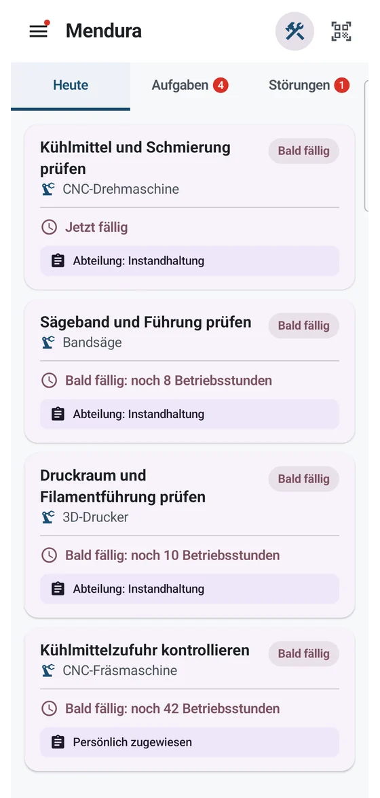
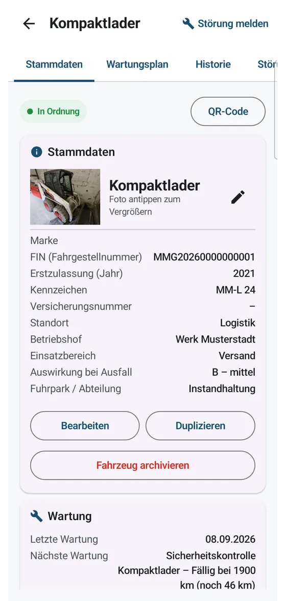
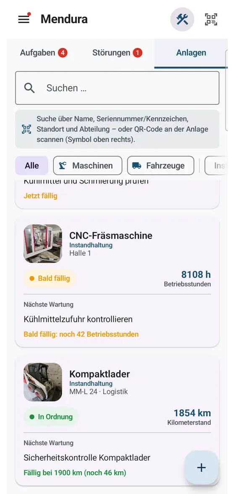
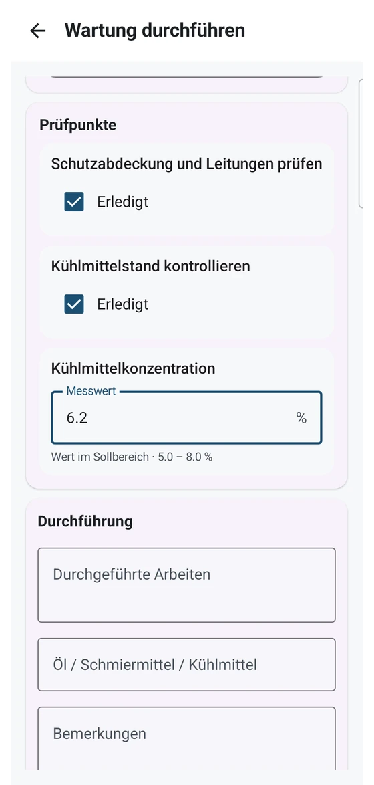
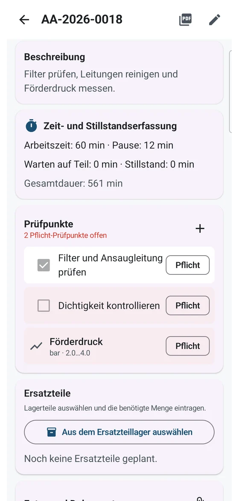
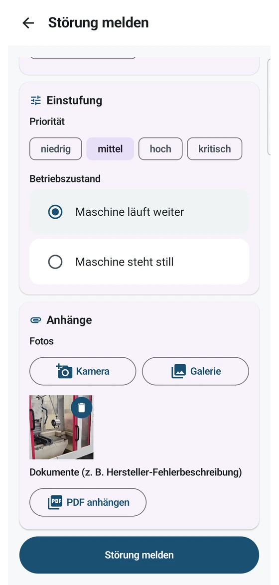
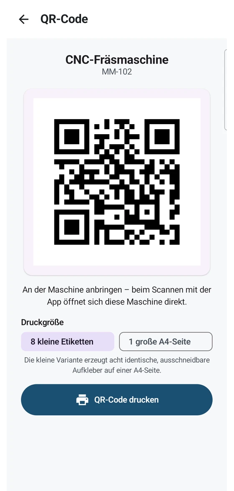
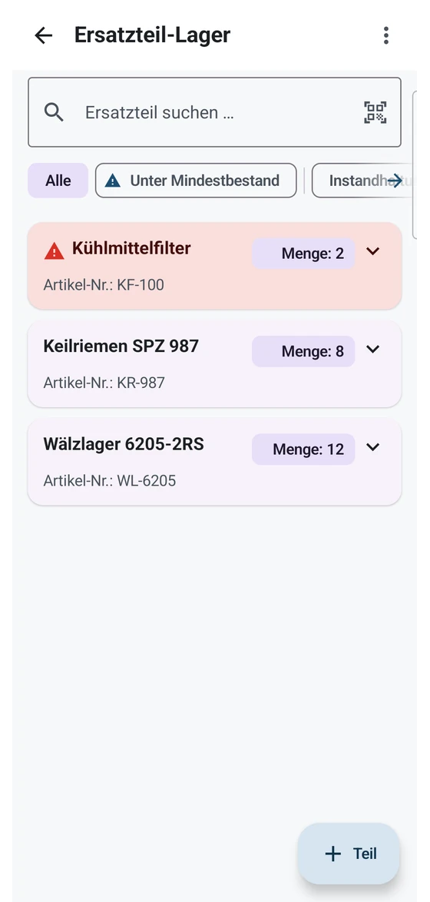
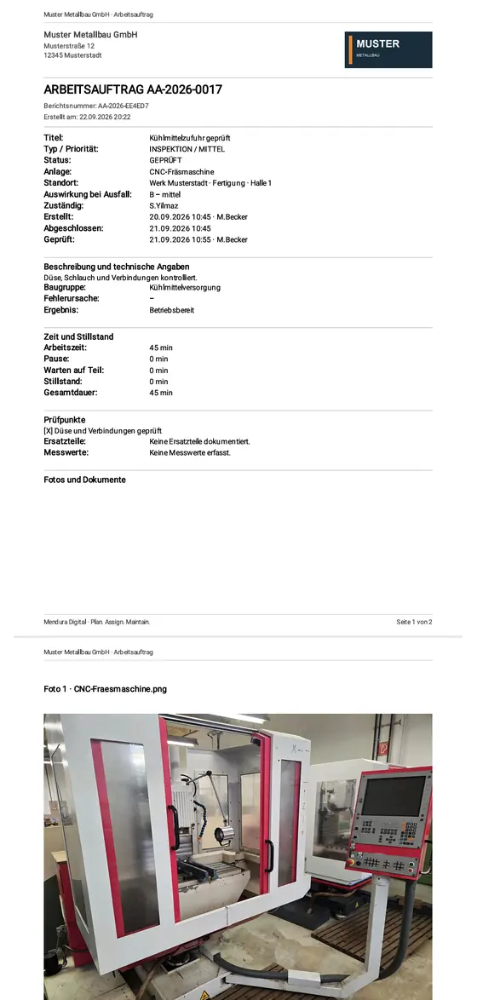
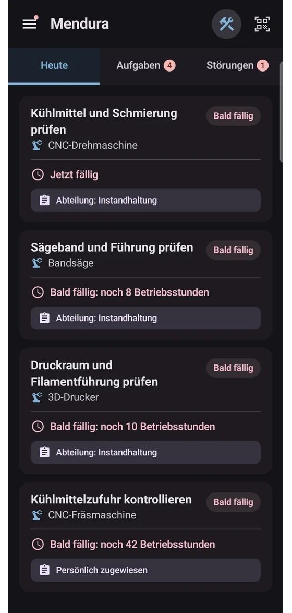
Para talleres que aún trabajan con papel
Todo en un solo sitio
Máquinas y vehículos (con matrícula y bastidor) con su ficha, código QR y planes por tiempo u horas de funcionamiento. La app le avisa de lo que vence.
Del fallo a la prueba documental
Avise de averías, trabaje las órdenes con puntos de control obligatorios, registre repuestos y genere informes PDF listos para auditoría.
Sus datos se quedan con usted
Sin cuenta con nosotros, sin servidores ajenos. Los dispositivos se sincronizan directamente en la red local, firmados y cifrados.
Solo lo que necesita
Órdenes de trabajo, puntos y clasificación son módulos que se activan y desactivan. Un taller pequeño empieza ligero y añade después lo que le hace falta.
¿La formación? De eso se encarga Schraubi.
Sin día de formación, sin manual, nadie tiene que sentarse al lado del nuevo compañero: Mendura trae su propio formador. Schraubi, la pequeña mascota engranaje, guía a cada persona paso a paso por la app, con flujos de trabajo reales en lugar de diapositivas.
- 11 capítulos, separados por rol: los técnicos aprenden a avisar, mantener y cerrar trabajos. Planificadores y administradores tienen sus propios capítulos.
- Ejercicios reales: avisar de una avería, realizar un mantenimiento, cerrar una orden. Schraubi señala exactamente dónde pulsar.
- Con control de comprensión: el progreso se registra por persona, así el responsable ve quién domina la herramienta.
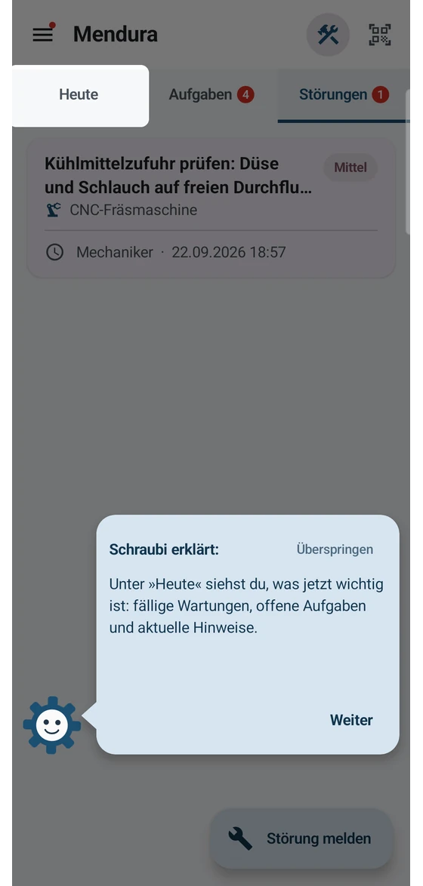
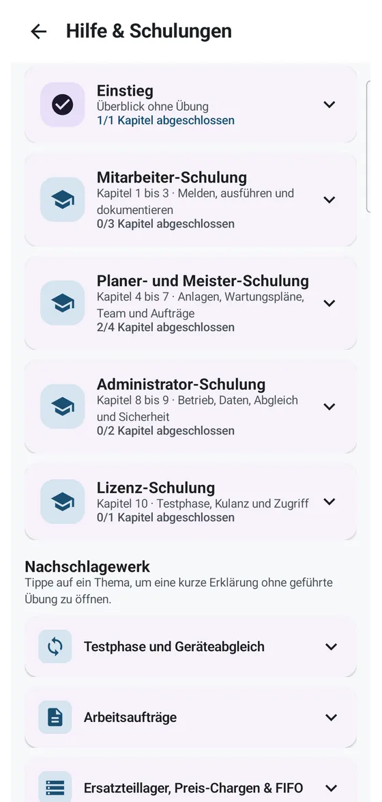
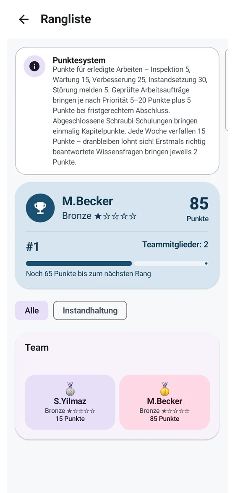
Mantenimiento que motiva
Documentar es esa tarea que todos dejarían para mañana. Justo ahí entra Mendura: el trabajo hecho suma puntos y, de repente, aparece ese pequeño afán que le hace volver a la máquina. Quién va primero esta semana lo ve todo el mundo.
- Puntos por trabajo real: inspecciones, mantenimientos, reparaciones y averías avisadas suman en su cuenta.
- Rangos, no presión: cada uno sube desde bronce a su ritmo. La clasificación semanal empieza de cero, así los nuevos también optan al primer puesto.
- El efecto deportivo: cuando los compañeros empiezan a adelantarse, la documentación sale sola y bien hecha. Justo lo que necesita un historial de mantenimiento.
- Nada obligatorio: puntos y clasificación son un módulo y se desactivan en cualquier momento desde los ajustes de administración.
Una licencia. Toda la empresa.
Mendura CMMS
La empresa contrata una vez y todo el equipo trabaja con ello, en tantos dispositivos como haga falta, incluidos los personales. Tras la prueba decide con calma.
- Dispositivos ilimitados en la empresa
- Sincronización en la red local, sin nube
- Actualizaciones continuas incluidas

Lo que viene después
Mendura se desarrolla continuamente: su suscripción financia nuevas funciones. Un vistazo a la dirección prevista:
Disponible: Mendura CMMS en Google Play
Planes de mantenimiento, averías, órdenes de trabajo, almacén de repuestos y la formación Schraubi, todo sin conexión y con actualizaciones continuas.
Próximamente: Schraubi Assist – calculadoras y fórmulas
Un manual técnico digital dentro de la app: datos de corte y velocidades, pares de apriete, tablas de roscas, conversor de unidades y más.
Planificado: etiquetas NFC/QR y comprobaciones con sensores
Escanee la etiqueta de la máquina y abra directamente su ficha. Además, herramientas de sensor como tendencia de vibración e inclinómetro.
Planificado: análisis y listas de comprobación
Indicadores como MTBF, tiempos de parada y ranking de averías, además de plantillas de listas para inspecciones periódicas.
Planificado: módulo de inventario
El inventario anual se rellena con los datos existentes de equipos y almacén. Posiciones libres ampliables, exportación a PDF y CSV.
El orden y el alcance pueden cambiar. Las sugerencias de los talleres se incorporan directamente a la planificación: ideas bienvenidas por correo.